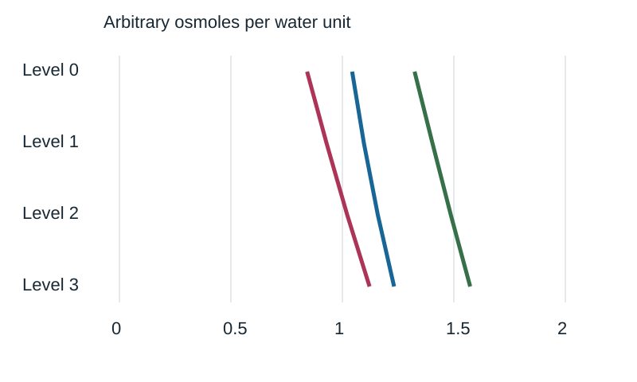
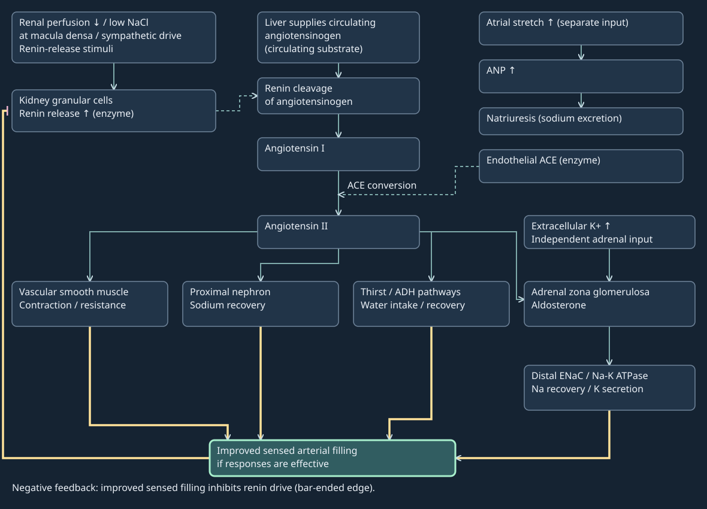

17. Tubular transport, renal regulation and disease
Two people excrete the same daily amount of dissolved particles, yet one produces a small volume of concentrated urine and the other several liters of dilute urine. A third has a modest urine volume despite poor removal of metabolic waste. Urine volume alone therefore cannot tell us whether filtration, solute transport or water conservation is working. The kidney first creates a large filtrate, then repeatedly changes its composition. Explaining the final sample requires following both amount and water through those compartments, while asking which signal changes which membrane.
Official lectures L38–40 supply the topic spine. Complete captions through their farewells were read. A separate bounded source-visual audit examined 193 samples and 21 repeat native-frame views; its observations are attributed, without claiming continuous video viewing by this author. The water-load activity visible at L40 24:30, absent from the caption detail, is retained in Problem 17.4. Research extensions and synthetic calculations are identified locally.
17.1 Proximal transport: recovering a filtered load L38 02:47
The proximal convoluted tubule (PCT) is the coiled epithelial tube leaving Bowman's urinary space in the renal cortex, the kidney's outer tissue region. Its continuation includes a straighter proximal segment toward the medulla, the inner region. A lumen is the fluid-filled interior; the epithelium is the cellular wall; interstitium is the tissue space outside that wall; and peritubular capillaries carry blood beside it. These are separate compartments. The epithelial apical membrane faces tubular fluid, whereas its basolateral membrane faces tissue. The vascular wall is another barrier between interstitium and blood.
Reabsorption transfers filtered material from tubular lumen back toward the circulation. Secretion transfers material from the body's internal fluids into tubular fluid; a secreted substance can also be generated within epithelial cells. Excretion is the final removal in urine. A molecule can be filtered, reabsorbed and secreted during the same renal passage. Neither “essential” nor “waste” is an instruction hardwired into a molecule: transporter distribution, concentration, binding and regulation determine its handling.
Let \(G\) denote glomerular filtration rate in L/min and \(P_x\) the plasma concentration of a freely filtered solute \(x\), in mmol/L. Its filtered load is \(F_x=GP_x\), in mmol/min. Let \(R_x\), \(S_x\) and \(E_x\) denote whole-kidney reabsorption, secretion and final excretion rates, respectively, in the same amount/time units. If there is no net intrarenal production, degradation or storage of \(x\), conservation gives
\[E_x=F_x-R_x+S_x=U_xQ_u.\tag{17.1}\]Here \(U_x\) is urinary concentration in mmol/L and \(Q_u\) urine flow in L/min. Equation (17.1) compares amounts per time. A small urinary concentration may coexist with substantial excretion if flow is large. For protein-bound drugs, \(GP_x\) must be replaced by the actual filtered load, including the freely filterable fraction and barrier properties. For ammonium synthesized in the kidney, the production term must be restored; the simple no-production form is inappropriate.
As an original synthetic example, choose \(G=0.125\) L/min, plasma glucose 5 mmol/L and plasma sodium 140 mmol/L. The filtered loads are 0.625 mmol glucose/min and 17.5 mmol sodium/min. A chosen 65% proximal recovery of sodium and water leaves 6.125 mmol sodium/min and 0.04375 L/min of water. The concentration ratio is 140 mmol/L again. Over a day, 180 L is filtered in this example, 117 L is recovered proximally and 63 L leaves the proximal region. Those 63 L are intermediate tubular delivery, not final urine. Recovery of equal fractions of water and total osmoles explains approximately preserved osmolality; recovery of sodium alone does not prove the composition of every other solute is unchanged.

Native/Fit nephron detail, complete source figure and independent adult renal ultrasound

Open controllable sodium/water recovery lesson in a full tab
| Selected state | Equal recovery | Water delivery | Sodium delivery | Sodium concentration |
|---|---|---|---|---|
| Input | 0% | 125mL/min | 17.5mmol/min | 140mmol/L |
| Proximal example | 65% | 43.75mL/min | 6.125mmol/min | 140mmol/L |
- Locate the red source PT in Figure17.1.
- Recover the same65% fraction of the selected water and sodium inputs:81.25mL/min and11.375mmol/min recovered.
- Divide remaining6.125mmol/min by0.04375L/min to obtain140mmol/L; this is intermediate delivery, not final urine.
One epithelium, two different transport surfaces L38 05:39
PCT epithelial cells have a lumen-facing brush border, a dense array of membrane-covered projections called microvilli. The projections enlarge the surface carrying apical proteins; they are not motile hairs or separate absorptive cells. Basolateral folding and abundant mitochondria support the transport machinery. A greater membrane area permits more transport proteins at a given density, but surface area alone cannot predict a flux without driving forces, permeability and energy supply. The lecture's exact length, diameter and area multiplier are not adopted as universal human measurements.
The basolateral sodium–potassium ATPase uses ATP hydrolysis to export three intracellular Na+ and import two K+ per pump cycle. Its orientation lowers intracellular sodium and contributes to the electrical potential across the membrane. Apical sodium-coupled transporters can then use the favorable inward sodium electrochemical gradient to bring other solutes into the cell. Primary active transport directly couples transport to an energy source such as ATP hydrolysis; secondary active transport couples one gradient to another transport process. Calling sodium–glucose entry “simple lipid diffusion” loses the protein, coupling and saturation that make selective recovery possible.
Glucose crosses apically through sodium–glucose cotransporters and exits basolaterally through GLUT facilitated-diffusion transporters. GLUT proteins transport glucose; they are not receptors delivering a glucose signal. Amino acids use multiple uptake and exit systems, with different substrate preferences; lactate also has carrier-mediated handling. Symport moves coupled substrates in the same direction across a particular membrane; antiport exchanges them in opposite directions. Direction always refers to a named membrane. A whole epithelial route can contain both. The transport principles and proximal glucose route are supported by the owning OpenStax reabsorption account; its summary table is a coarse segment guide rather than an exact molecular atlas.
Near-complete normal recovery of filtered glucose does not imply an unlimited capacity. Increasing filtered load can exceed transporter capacity, and transport inhibition can increase urinary glucose. This chapter does not derive a clinical threshold from the lecture's normal-condition statement. Water moves down its water-chemical-potential gradient through transcellular and paracellular routes. Solute recovery creates local osmotic driving forces; sodium does not physically tow a fixed number of water molecules through every transporter. Paracellular means between neighboring cells, through a pathway whose permeability is controlled by their junctional proteins. Calcium, magnesium and potassium pass through selected pathways; the ions do not construct tight junctions.
Segmental fractions differ markedly between substances. The PCT recovers a majority of filtered sodium, water, bicarbonate and potassium, but most magnesium recovery occurs farther downstream, especially in the thick ascending limb. Chloride recovery has both transcellular and paracellular components and changes along the proximal tubule; a single universal proximal sodium–chloride cotransporter is an inadequate account. Accordingly, the conflicting source values for chloride and the common 50–55% allocation to potassium, calcium and magnesium are not retained as one quantitative table. The anatomical question is which segment and route carries the load, with the denominator always the filtered load.
Bicarbonate reclamation: the proton returns, the carbon crosses L38 16:50
Bicarbonate, HCO3−, is a major extracellular acid–base buffer. Recovering filtered bicarbonate prevents loss of existing buffer. The apical sodium–hydrogen exchanger NHE3 permits Na+ entry coupled to H+ secretion. Luminal H+ combines with filtered bicarbonate to form carbonic acid. Carbonic anhydrase accelerates interconversion between carbon dioxide plus water and carbonic acid/bicarbonate species; it changes reaction rate rather than supplying the gradient or ATP.
For an idealized reclamation cycle, write the luminal and cellular reactions separately:
\[\begin{aligned} \mathrm{H^+_{L}+HCO^-_{3,L}}&\rightleftharpoons\mathrm{CO_{2,L}+H_2O_L},\\ \mathrm{CO_{2,E}+H_2O_E}&\rightleftharpoons\mathrm{H^+_E+HCO^-_{3,E}}. \end{aligned}\tag{17.2}\]Subscripts \(L\) and \(E\) identify lumen and epithelial cytosol. Luminal carbon dioxide enters the epithelial cell. Intracellular carbonic anhydrase supports regeneration of H+ and bicarbonate; the proton can be secreted again, while bicarbonate exits basolaterally through the sodium–bicarbonate cotransporter NBCe1. Tracking one bicarbonate-derived carbon through these steps yields net lumen-to-blood bicarbonate recovery. Tracking the secreted proton shows recycling. In this ideal cycle there is no net urinary H+ excretion and no creation of new body bicarbonate.
This corrects the source account that sends bicarbonate-derived carbon dioxide away in final urine and then returns “leftover” bicarbonate by simple basolateral diffusion. Carbon dioxide from blood or epithelial metabolism can also enter the reaction pool; it must not be confused with the carbon accounting of the filtered molecule. The Core Curriculum transport account, bicarbonate section, supports the NHE3–carbonic-anhydrase–NBCe1 pathway. Direct retrieval was challenged during this authoring pass; the independently acquired local full-text dossier and indexed owning-source text were used, with the access boundary recorded in §17.8.
Static equivalent: basolateral Na/K pump supports apical sodium-coupled entry; luminal H+ + filtered HCO3− → CO2; CO2 enters cell → H+ + HCO3−; H+ recycles apically, HCO3− exits through basolateral NBCe1. Net: existing bicarbonate recovered, no net acid excreted in this isolated cycle.
Urea, filtered protein and secretion are different routes L38 23:16
Urea is a small polar nitrogen-containing molecule, not a nonpolar lipid. Its permeability differs among nephron segments, and specialized urea transporters contribute particularly to medullary recycling. Some filtered urea is recovered proximally as water removal raises luminal urea concentration. Later secretion and reabsorption mean that its final excretion cannot be inferred from a single proximal fraction. The urea/ammonia physiology review distinguishes urea transport from renal ammonia production. Most circulating lipids are protein bound or in lipoprotein particles; a generic “freely filtered lipid urea” pool is not used here.
Filtered small proteins and peptides can bind apical uptake receptors, enter endosomes, intracellular sorting compartments, and undergo degradation in lysosomes, enzyme-containing acidic compartments. Amino-acid constituents may return to the body. This is not routine filtration of intact red cells or universal return of an intact insulin molecule by exocytosis. Hemoglobin normally enclosed in red cells is outside the freely filtered pool; cell-free hemoglobin during intravascular hemolysis is a different pathological context. Endocytosis and transporter-mediated amino-acid exit are distinct membrane events.
Proximal secretion also clears organic anions and cations through serial basolateral uptake and apical exit pathways. Energy coupling can involve ATP-driven pumps or ion/exchange gradients; secretion does not mean every substrate binds one ATP-powered protein. The source list includes penicillin, cephalosporins, methotrexate, urate, bile salts, morphine and oxalate. They are retained here as chemically and pharmacologically diverse examples requiring substrate-specific handling, not one verified transporter class or proof that every listed drug is predominantly secreted unchanged. Oxalate is an anion, not an organic base. Urate undergoes both reabsorption and secretion. Liver metabolism and renal elimination are separate processes; parent molecules, metabolites, protein binding and competition matter. No dose or clearance prediction follows from this list.
Ammoniagenesis is renal ammonia production, principally from proximal tubular glutamine metabolism. The proximal-tubule biology review, acid–base section available in indexed owning text, supports the following stoichiometry. Under the conventional complete glutamine pathway, one glutamine yields two ammonium equivalents and two bicarbonate equivalents. Ammonia collectively names NH3 and NH4+ here; their reversible acid–base relation is NH4+ ⇌ NH3 + H+. Their transport and protonation differ. Excretion of generated ammonium permits net addition of bicarbonate to the body; return of ammonia to the circulation and subsequent metabolism changes that net accounting. This differs from equation (17.2), which recovers existing filtered buffer. Acidosis can increase this pathway; it does not command all renal pH values to become neutral pH 7.
Let \(N_A\) be net acid excretion in milliequivalents/day, \(E_{NH4}\) urinary ammonium excretion, \(E_{TA}\) titratable-acid excretion and \(E_{HCO3}\) urinary bicarbonate loss, expressed as acid/base equivalents per day. Titratable acid counts urinary buffers such as phosphate that carry secreted proton equivalents under the chosen titration convention. The acid-balance review, renal acid-excretion table and discussion available in indexed owning text, supports the standard bookkeeping relation
\[N_A=E_{NH4}+E_{TA}-E_{HCO3}.\tag{17.3}\]With synthetic values 45, 25 and 5 mEq/day, respectively, \(N_A=65\) mEq/day. Free urine H+ concentration alone misses most buffered acid. At 180 L/day filtered volume and plasma bicarbonate 24 mmol/L, the filtered bicarbonate load is 4320 mmol/day; an illustrative 85% proximal recovery returns 3672 mmol/day of existing bicarbonate. In contrast, 30 mmol/day glutamine following the specified pathway could supply 60 mmol/day bicarbonate equivalents if the corresponding ammonium is excreted. These numbers compare reclamation with generation; they are not a complete acid–base diagnosis, a measured patient balance or a treatment target.
17.2 Countercurrent organization: creating, preserving and using a gradient L39 02:43
The loop of Henle carries fluid toward the medulla through a descending limb and back toward cortex through an ascending limb. Short loops turn in the outer medulla; long loops reach deeper. Thin portions have flattened epithelium; thick ascending portions have a different transport apparatus. The proximal straight segment sometimes called a thick descending segment should not be treated as identical to the water-permeable thin descending limb. A U-shaped outline establishes opposing flow directions, but it does not by itself create a concentration gradient.
Osmolality counts osmotically active particles per kilogram of solvent, commonly mOsm/kg water. Osmolarity counts particles per liter of solution. Grams of an unspecified solute per kilogram do not define either quantity: molecular mass and dissociation determine particle number. In dilute aqueous teaching calculations, a liter of water is approximated as a kilogram; this approximation is explicitly invoked when the two conventions are compared. Tonicity describes a solution's effect on cell volume across a specified membrane and depends on effectively nonpenetrating solutes. Urea can contribute to measured osmolality while having different tonic effects from a solute effectively excluded by that membrane.
Approximately isosmotic proximal outflow can contain much less glucose and bicarbonate than the original filtrate. Thus a value near plasma osmolality does not imply unchanged composition. In a simple packet, 300 mOsm initially dissolved in 1 kg water becomes 600 mOsm/kg if half the water leaves and no solute leaves. Conversely, removing solute while retaining water lowers osmolality. These are deductions from amount divided by water mass; membrane properties determine whether those operations can actually occur.
The local salt effect and its axial multiplication L39 10:28
The thick ascending limb (TAL) has low water permeability while reabsorbing NaCl. Apical NKCC2 couples one Na+, one K+ and two Cl−; basolateral sodium–potassium ATPase supplies the sodium gradient, and basolateral chloride pathways permit chloride exit. Potassium recycling at the apical side helps sustain uptake. NKCC2 is secondary active transport, not an ATP-hydrolyzing pump or a generic receptor. Thin ascending segments use different transport/permeability properties; distributing TAL transporters uniformly around the whole loop would erase the mechanism's essential asymmetry.
Salt reabsorption raises interstitial osmolality locally while diluting ascending tubular fluid. Water can leave water-permeable descending regions toward that interstitium, concentrating their contents. Flow carries concentrated descending fluid toward the bend and supplies the ascending limb. Continued local transport plus continuous opposing flow maintains a difference along the cortex-to-medulla axis. This is countercurrent multiplication: a repeated local transverse transport effect supports a larger axial gradient. The process is coupled, rather than a medulla filled with salt once before water movement begins.
The source's 300 → 500 → 700 → 900 → 1200 sequence is retained only as a schematic gradient idea, not a measured universal profile. The outer-medullary account depends strongly on TAL active transport. Inner-medullary concentration involves urea, thin limbs, collecting ducts and three-dimensional vascular/tubular organization; a single TAL salt-pump cartoon is incomplete there. The mammalian concentrating-mechanism review abstract explicitly distinguishes the well-supported outer-medullary active process from uncertainty concerning the inner-medullary gradient. The original Gottschalk–Mylle micropuncture study record is supplied for historical evidence, without claiming its full paper was read in this authoring pass.
An outer-medullary TAL-surrogate submodel
The following calculation represents only an outer-medullary paired-flow submodel. Every modeled ascending compartment is an active TAL surrogate: it applies a generic energy-dependent transfer law inspired by thick ascending transport. Thin ascending limbs, the anatomical bend and inner medulla are omitted. The four levels therefore cannot be mapped one-for-one onto the complete long-loop anatomy in Figure 17.1. In particular, the deepest model bin is still a TAL surrogate, never a thin ascending segment with an active pump. The urinary-concentration review distinguishes active outer-medullary TAL transport from the different thin-limb/inner-medullary problem; the model does not resolve the latter.
To distinguish a computed gradient from a painted one, construct four ordered outer-medullary model levels, indexed \(j=0,1,2,3\) from the cortical side toward greater model depth, without assigned physical distances. Each level has three well-mixed compartments: descending-fluid surrogate \(D_j\), active TAL surrogate \(A_j\), and interstitium \(I_j\). Each has fixed water volume one arbitrary water unit. Let \(c^D_j,c^A_j,c^I_j\) denote generic osmole amount per water unit. These are dimensionless scaled concentrations, initially one. They are not sodium concentrations and do not resolve electrical charge, urea or separate ions.
Fresh descending inflow \(q_0=0.2\) water units per model-time unit has concentration one. At each level let \(w_j\geq0\) be outward descending water transfer; conservation requires downstream descending flow \(q_{j+1}=q_j-w_j\). The synthetic law is \(w_j=\min[0.03\max(c^I_j-c^D_j,0),0.4q_j]\). Water exits interstitium toward an explicit blood sink at the same rate, preserving its fixed volume and carrying interstitial solute with it. A lumped no-exchange return boundary sends the deepest descending outflow to the deepest modeled TAL input. Every TAL bin carries that return flow \(q_4\), because this submodel allows no ascending water transfer. This boundary conserves flow and osmoles; it does not simulate the missing bend or thin ascending transport.
Let \(s_j=0.12\max(c^A_j-c^I_j+0.6,0)\) be the ascending-to-interstitial osmole transfer rate. This imposed energy-dependent law can move osmoles against a concentration difference up to the chosen offset; the offset is a synthetic “single effect,” not a measured TAL limit. Define an additional signed interstitial exchange \(b_j=0.01(c^I_j-1)/(j+1)\) with a concentration-one external reservoir. Positive \(b_j\) removes osmoles; negative \(b_j\) returns them. Neighboring interstitial bins exchange osmoles at conductance 0.003. These choices make a finite, reproducible balance; they do not identify biological rate constants.
At fixed unit volumes the concentration derivatives equal amount derivatives. If \(c^D_{-1}=1\), descending balance is
\[\frac{dc^D_j}{dt}=q_jc^D_{j-1}-q_{j+1}c^D_j.\tag{17.4}\]Ascending inlet concentration is the next deeper TAL-surrogate bin, with the deepest bin receiving the specified no-exchange return-boundary fluid. Writing \(c^{A,\mathrm{in}}_j=c^A_{j+1}\) for \(j<3\) and \(c^{A,\mathrm{in}}_3=c^D_3\), the other balances are
\[\begin{aligned} \frac{dc^A_j}{dt}&=q_4(c^{A,\mathrm{in}}_j-c^A_j)-s_j,\\ \frac{dc^I_j}{dt}&=s_j-w_jc^I_j-b_j+0.003\!\sum_{k\in\mathcal N_j}(c^I_k-c^I_j). \end{aligned}\tag{17.5}\]Here \(\mathcal N_j\) contains the adjacent existing axial bins. Internal salt transfers cancel when all equations are summed; neighboring exchanges cancel in equal and opposite pairs. Let \(M\) be the sum of all twelve compartment amounts, \(B\) cumulative net osmoles removed into the blood/reservoir sink, \(O\) cumulative ascending outlet amount, and \(F\) cumulative fresh inlet amount. The exact bookkeeping invariant is \(M+B+O-F=12\). Water has its own balance: inlet minus ascending outlet equals the sum of the four descending transfers. A model that raises all interstitial concentrations without debiting the ascending limb would fail this test.
The executable implementation uses forward Euler steps of 0.01 model-time units to model time 200. It produces interstitial concentrations 1.324, 1.404, 1.486 and 1.573 from cortex toward medulla, while the ascending outlet is 0.842. The maximal osmole-balance residual is about 6.8 × 10−12 arbitrary osmole units. Halving the time step changes the final compartment concentrations by at most 4.6 × 10−7. With active transfer set to zero and the uniform initial condition retained, every concentration remains one. These are checks on this numerical construction. They are not evidence that a human papilla has any of these dimensionless concentrations.
Open source, saved-state replay and accounting controls separately

| Ordered level | D | A | I |
|---|---|---|---|
| 0 | 1.043816 | 0.841672 | 1.323803 |
| 1 | 1.096560 | 0.929019 | 1.404056 |
| 2 | 1.158889 | 1.021607 | 1.486309 |
| 3 | 1.231862 | 1.121823 | 1.573213 |
Active final: stored M=14.232629402; sink B=11.199050872; discharged O=26.568319725; supplied F=40.000000000. M+B+O−F≈12. No-active-transfer history: D=A=I=1 at every level, M=12, B=0, O=F=40. Comparator selection restarts from the common initial state.
Exchange preserves a gradient without creating energy L39 22:06
Vasa recta are medullary blood vessels associated with long-looped nephrons. Descending blood encounters increasingly concentrated surroundings, tends to lose water and gain diffusible solute; ascending blood traverses the reverse environment and tends to gain water and release solute. This countercurrent exchange limits solute washout while allowing removal of reabsorbed water. It uses existing gradients and geometry, whereas multiplication depends on energy-coupled tubular transport. Blood is not a second urinary limb.
Equal entry and exit osmolality in a simple cartoon does not imply zero net transport. Flow and composition must also be counted: more water may leave the medulla in blood than entered it, with a smaller concentration difference. Real vessels are heterogeneous, and exchange is not perfect. Increased washout can impair concentration even when water channels remain available. The returning urine case consequently has three distinct potential failures: insufficient gradient creation, excessive gradient washout, or insufficient collecting-duct water permeability. A concentrated medullary environment alone cannot select the final urine volume.
17.3 Distal control: different signals govern salt and water L39 28:50
The distal convoluted tubule (DCT) continues from the ascending limb in the cortex. Its early region reabsorbs NaCl through the apical sodium–chloride cotransporter NCC while remaining relatively water impermeable. Distal calcium recovery is regulated, including stimulation by parathyroid hormone, a calcium-regulating hormone from the parathyroid glands. Calcium enters through apical pathways including TRPV5; intracellular calcium-binding proteins such as calbindin support handling, while basolateral sodium–calcium exchange and calcium ATPases support exit. This separates an entry channel from intracellular binding and secondary/primary active exit; a generic proton-driven calcium arrow would not identify the route. The distal-tubule review, calcium-transport passage available in indexed owning text, supports this three-step distinction. The source's 20–30% early-DCT sodium allocation is a segment error: the TAL handles a much larger fraction than the DCT. A representative textbook allocation is approximately 25% of filtered sodium in the TAL and 5% in the DCT, with condition-dependent downstream adjustment. These are filtered-load fractions, not percentages of the small residual load arriving at each segment.
The late distal region transitions into the connecting tubule and collecting system. Exact DCT subsegment boundaries matter in specialized physiology; the common early/late classroom split compresses cellular heterogeneity. Principal cells in the aldosterone-sensitive distal nephron support sodium uptake through apical ENaC, the epithelial sodium channel, and potassium secretion through apical potassium pathways, supported by basolateral sodium–potassium ATPase. Aldosterone is an adrenal steroid acting through the mineralocorticoid receptor to regulate this machinery. It is not an apical sodium–glucose transporter. Endotext's aldosterone chapter, introduction and regulation, distinguishes its adrenal source and its major angiotensin/potassium controls.
Antidiuretic hormone (ADH), also called arginine vasopressin, changes water permeability. It is synthesized in hypothalamic neurons and released from their posterior-pituitary terminals into blood. In collecting-duct principal cells, basolateral V2 receptor signaling increases availability of aquaporin-2 (AQP2) water channels at the apical membrane. Water then crosses toward the concentrated interstitium, with basolateral exit supported by other aquaporins. Short-term trafficking of existing channels and longer-term changes in protein abundance are distinct processes. Neither ADH nor AQP2 pumps water uphill; they alter permeability to an existing osmotic driving force.
An original experiment examined vasopressin-deficient Brattleboro rats, using immunohistochemistry and immunoelectron microscopy. Yamamoto and colleagues (1995) reported increased apical AQP labeling after vasopressin with reduced cytoplasmic labeling, whereas AQP3 remained basolateral. The abstract supports channel relocation and membrane polarity; it does not establish a human channel count, this animation's timing or a clinical treatment response. It also explains why merely drawing additional channels anywhere on the cell would miss the functional claim.
The same excreted osmoles can require very different water volumes
Let \(E_{osm}\) be the daily excretion of total dissolved particles in mOsm/day and \(U_{osm}\) urine osmolarity in mOsm/L. The identity \(E_{osm}=Q_uU_{osm}\), now using daily urine flow, gives \(Q_u=E_{osm}/U_{osm}\). With a synthetic fixed load 600 mOsm/day, concentrations 1200 and 100 mOsm/L require 0.5 and 6 L/day, respectively. This returns to the opening case: higher urine volume need not imply higher waste production or higher GFR. Conversely, reduced filtration can lower clearance despite ongoing water excretion.
To compare that water flow with an isosmotic reference, let \(P_{osm}\) be plasma osmolarity and define osmolar clearance \(C_{osm}=E_{osm}/P_{osm}\), the hypothetical plasma-volume flow containing the excreted particles. Free-water clearance is the difference between actual urine flow and that hypothetical isosmotic flow:
\[C_{H_2O}=Q_u-C_{osm}=Q_u-\frac{U_{osm}Q_u}{P_{osm}}.\tag{17.6}\]At synthetic \(P_{osm}=300\) mOsm/L, \(C_{osm}=2\) L/day. Concentrated urine at 0.5 L/day gives \(C_{H_2O}=-1.5\) L/day; dilute urine at 6 L/day gives +4 L/day. The negative sign expresses water conservation relative to the isosmotic reference, not negative urine production. This is total-osmole bookkeeping. Because urea and electrolytes have different effects on tonicity, it is not interchangeable with electrolyte-free water clearance or a prediction of a person's plasma sodium change.
Collecting-duct water removal also concentrates luminal urea; regulated inner-medullary urea permeability contributes to recycling. Water permeability and solute gradients therefore interact. The final urine's yellow pigmentation is related to heme-breakdown products conventionally termed urochrome/urobilin pigments; the NLM account connects hemoglobin breakdown, bilirubin, gut microbial urobilinogen production and the urinary pigment. This route is not proof of intact hemoglobin filtration. Dilution can lighten urine and concentration can darken it, but food pigments, drugs, blood and disease also alter color. A color chart alone cannot measure hydration, GFR or infection.
Pressure, perfusion and the branching renin network L40 02:40
Pressure is force per area, flow is volume per time, and vascular resistance relates a pressure difference to flow. In a lumped quasi-steady vessel model, flow equals pressure difference divided by resistance. Effective arterial blood volume describes the adequacy of arterial filling/perfusion sensed by regulatory systems; it is not synonymous with total body water. Autoregulation and changing afferent/efferent resistance can partly stabilize glomerular filtration. A fall in systemic pressure outside the effective autoregulatory range can compromise renal perfusion, but a hormone that raises pressure does not thereby guarantee increased GFR.
The renin–angiotensin–aldosterone system (RAAS) connects sensing to several effectors. Renin is a proteolytic enzyme released by juxtaglomerular granular cells, specialized cells associated with the afferent arteriole. Reduced renal perfusion pressure, reduced NaCl delivery sensed through the macula densa tubular epithelial specialization, and sympathetic beta-adrenergic stimulation can increase renin release. The macula densa communicates tubular information; it is not the renin-secreting gland itself. Renin cleaves liver-derived angiotensinogen to angiotensin I. Angiotensin-converting enzyme (ACE), expressed on endothelial surfaces including abundant pulmonary vascular surfaces and elsewhere, forms angiotensin II. Saying that the lungs simply secrete ACE omits this membrane-associated organization.
Angiotensin II promotes vascular smooth-muscle contraction, proximal sodium recovery, thirst and aldosterone secretion by the adrenal cortex's zona glomerulosa. It interacts with ADH signaling, but ADH is not an obligatory intermediate between angiotensin II and aldosterone. Extracellular potassium independently regulates aldosterone. The source's posterior-pituitary aldosterone statement and its compulsory vasoconstriction → ADH → aldosterone chain are corrected to this branching organization. The mechanisms are summarized in the renin-system reference; its introduction and renin/ACE/angiotensin/aldosterone mechanism sections were directly read after an initial access challenge.
Atrial natriuretic peptide (ANP) is released in response to atrial stretch and promotes sodium excretion, or natriuresis, with water excretion, vasodilatory actions and inhibitory effects on renin/aldosterone signaling. It supplies a counter-regulatory route when filling is increased. Reduced effective arterial filling generally stimulates renin rather than inhibiting RAAS; the source caption reverses that relationship. Sodium balance influences extracellular volume over time, while water balance strongly influences concentration. Aldosterone-driven sodium recovery does not make an otherwise water-impermeable membrane obligatorily permeable.
A qualitative control sequence now distinguishes two disturbances. Water deprivation tends to increase effective plasma tonicity: hypothalamic sensing, ADH release and thirst favor water recovery/intake. Loss of sodium-containing extracellular fluid can instead lower effective arterial filling: renal and cardiovascular signals recruit RAAS and, if sufficiently strong, nonosmotic ADH release. The same ADH response may therefore occur under different concentration conditions. The vasopressin physiology account, cellular/function/mechanism sections, supports these differentiated stimuli. No one-dimensional “blood pressure low” arrow captures every state.

Static equivalent: renal renin cleaves circulating liver angiotensinogen → AngI; endothelial ACE → AngII → four parallel branches. Aldosterone → distal ENaC/Na-K ATPase; extracellular K+ also regulates adrenal secretion. Improved sensed filling inhibits renin drive. Increased tonicity → hypothalamic/posterior ADH release → collecting-duct apical AQP2; water load tends to suppress ADH. Strong nonosmotic stimuli can modify that response.
17.4 Renal disease: a mechanism is not a symptom count L40 14:28
Chronic kidney disease (CKD) means abnormalities of kidney structure or function present for at least three months, with implications for health. Estimated GFR (eGFR) infers filtration from endogenous markers and an estimating equation; it is not a direct count of intact nephrons. Albuminuria means urinary albumin excretion, commonly assessed using the urine albumin-to-creatinine ratio (ACR). ACR corrects partly for urine dilution by comparing albumin concentration with creatinine concentration in the same sample. Neither one abnormal eGFR nor one albumin measurement automatically establishes chronicity.
The KDIGO 2024 executive summary, Table 1, supports combined GFR/albumin assessment, repeat confirmation, chronicity evidence and cause-directed evaluation. Imaging and selected biopsy answer structural or etiological questions; biopsy is not an obligatory step for every person with CKD. Classification considers cause, filtration category and albuminuria category. For example, a synthetic spot albumin concentration 80 mg/L divided by creatinine 1 g/L yields 80 mg/g; dilution that halves both concentrations leaves the ratio unchanged. This arithmetic does not establish persistence, cause or management eligibility.
Diabetic kidney disease involves renal injury associated with diabetes; persistent hyperglycemia affects vascular and glomerular biology, and hemodynamic, inflammatory and metabolic mechanisms interact. High glucose changing osmolality is not a sufficient disease explanation. Filtration and albumin leak may change differently, so urine albumin and eGFR supply complementary information. The NIDDK account emphasizes blood/urine assessment and glucose/blood-pressure management, often before symptoms develop. Insulin is one glucose-lowering tool in appropriate contexts; its presence in a source list does not make it every person's renal treatment.
Persistent hypertension can damage renal vessels and impair renal function; impaired sodium/water handling can in turn promote hypertension. Hypertensive nephrosclerosis names a vascular/scarring pattern attributed to chronic hypertension in an appropriate clinical context. High pressure, reduced local perfusion and secondary tissue injury must be distinguished from the initial pressure-dependent filtration of a healthy nephron. Early disease may be asymptomatic. The NIDDK hypertension–kidney account provides patient-level context; it does not make hypertension alone a tissue diagnosis.
Glomerulonephritis is inflammatory injury involving glomeruli. Different immune mechanisms, infection-associated processes and systemic diseases can produce different lesions. It is not synonymous with every inherited kidney disorder or every low eGFR. Hematuria is blood in urine; proteinuria is excess urinary protein. They can suggest an injured filtration barrier without uniquely identifying its cause. The glomerular-disease account distinguishes diagnostic blood/urine testing and selected biopsy. Steroids, other immunosuppression and plasma exchange belong to specific disease/severity contexts; mentioning them does not endorse a common treatment for all glomerular disease. Polycystic disease, involving inherited cystic disorders, supplies another structural cause outside the source's diabetes/hypertension pair.
Obstruction and infection have different causal routes L40 19:07
A kidney stone is a solid concretion formed from urinary constituents. Calcium-containing and other compositions have different chemistry. Formation, growth and retention are distinct from obstruction: a stone can be asymptomatic until movement or blocked drainage produces colic, hematuria, nausea or other problems. Evaluation uses clinical context, urine/blood testing and appropriate imaging; routine biopsy is not the standard way to locate a urinary stone. Medicines helping passage do not imply every stone can be dissolved. NIDDK's treatment account distinguishes passage, fragmentation/removal and composition-dependent prevention. No stone-drug regimen is inferred here.
A urinary tract infection (UTI) is microbial infection in the urinary tract, commonly bacterial; E. coli is a frequent cause. Bladder infection differs from pyelonephritis, infection involving the kidney. Ascending infection can connect them; stones or other obstruction can change risk and urgency. Dysuria, frequency and lower abdominal discomfort differ from systemic/kidney symptoms such as fever, chills or flank pain. CDC's UTI account, updated September 2026, supports symptoms, clinical evaluation and antibiotic treatment when appropriate. Urinalysis and sometimes culture help; the source's unspecified FDA warning and blanket resistant-UTI mortality claim are excluded. Resistance belongs to organisms and their susceptibility to antibiotics, not an antibiotic becoming intrinsically “resistant.”
Fatigue, edema, nausea, breathlessness and itching may occur in advanced renal dysfunction, but none uniquely measures remaining nephron number. Low urine volume is not required for CKD. Renal functional reserve describes capacity to increase filtration under a specified stimulus, not a guaranteed hidden fraction that remains healthy until a universal damage threshold. The source's 90–95% damage-at-detection claim is not retained as a general law. Early markers and structured testing can reveal disease before severe symptoms. Recovery after acute injury, chronic scarring and developmental nephron number are also different questions; “all kidney cells cannot regenerate, therefore transplantation is the only option” is an invalid general conclusion.
Clinical context checked 4 November 2026: the owning KDIGO page identifies the published 2024 guideline and a 2027 medication-focused public-review draft. A public-review draft is not a final replacement guideline. Dialysis initiation is based on a composite of symptoms, signs, laboratory abnormalities, GFR, quality of life and preferences, rather than a single symptom or fixed nephron-loss percentage. Transplantation, dialysis and comprehensive conservative care have different purposes and eligibility. This chapter supplies mechanisms and evidence boundaries, not an individualized evaluation or prescription.
17.5 Hemodialysis: another membrane with different controls L40 20:49
Hemodialysis circulates blood through an external membrane device called a dialyzer. Blood and dialysate, a prepared solution, remain in separate paths. In a common hollow-fiber design blood flows inside fibers while dialysate flows outside, often in the opposite direction. A solute can diffuse down its concentration gradient across the membrane; its net direction depends on the composition on both sides. The membrane does not label all blood solutes “toxic.” Cells and much protein remain in blood, whereas selected small solutes can cross. Dialysate composition and membrane properties matter.
Ultrafiltration is pressure-driven water transfer across the membrane, distinct from solute diffusion. An imposed transmembrane hydraulic pressure difference, opposed by relevant osmotic effects, drives water removal. Blood-circuit pressures, dialysate-side pressure and the patient's systemic arterial pressure are different measurements. The glomerular filtration formula cannot be transplanted into a dialyzer with unchanged parameters. Removing water changes circulation and concentration, while diffusion can remove a solute even when net water transfer is zero.
The NIDDK hemodialysis account describes hollow fibers, opposing dialysate flow and partial replacement of kidney function. Typical in-center schedules are intermittent, often three sessions per week lasting about four hours, with different home/overnight schedules. These are descriptive examples, not a prescription. An external device does not reproduce continuous tubular regulation, every solute clearance, erythropoietin production or vitamin-D activation. A patient may therefore require separate management of renal endocrine and metabolic consequences.
Vascular access connects the circuit to the circulation. An arteriovenous fistula surgically joins an artery to a vein; an arteriovenous graft uses an intervening conduit. Needles access these established high-flow paths. A dialysis catheter is a different device placed in a large vein. “Arterial” and “venous” circuit lines describe withdrawal and return functions and do not mean every treatment inserts a catheter into an artery. A blood pump, anticoagulation when appropriate, pressure monitoring, an air trap/detector and a return-line clamp address different circuit hazards. The source schematic's omission of a visible dialysate circuit is not evidence that the dialysate path is absent.
Access infection, clotting, narrowing (stenosis) and central venous obstruction can impair treatment. Rapid fluid removal can contribute to hypotension and cramps; circuit obstruction can produce abnormal local pressure without implying that the patient's systemic pressure has risen. Food/fluid planning may address potassium, phosphate, sodium and interdialytic accumulation, tailored to residual kidney function, measurements and treatment schedule. These categories explain the source's burdens and complications without prescribing a universal restriction or access choice.
Deriving a clearance model before trusting a falling curve
Let \(C_b(t)\) be the concentration of a chosen dialyzable solute in one well-mixed body-water compartment, in mmol/L; let \(V_b\) be its constant effective distribution volume, in L. Let \(K_d\) be an effective dialyzer clearance in L/min, defined so that removal rate is \(K_dC_b\) when incoming dialysate concentration is negligible. Assume constant \(K_d,V_b\), no production, no other removal, no fluid-volume change and no redistribution delay. Then the amount \(V_bC_b\) decreases at that removal rate:
\[V_b\frac{dC_b}{dt}=-K_dC_b, \qquad\frac{dC_b}{C_b}=-\frac{K_d}{V_b}\,dt.\tag{17.7}\]Integrating from initial concentration \(C_0\) at time zero gives \(\ln(C_b/C_0)=-K_dt/V_b\), hence
\[C_b(t)=C_0e^{-K_dt/V_b},\qquad N_{removed}=V_bC_0(1-e^{-K_dt/V_b}).\tag{17.8}\]The exponent is dimensionless because clearance times time is a volume. Synthetic \(V_b=40\) L, \(K_d=0.2\) L/min, \(C_0=20\) mmol/L and 240 min yield 6.024 mmol/L, an ideal 69.88% reduction and 559.045 mmol removed. Zero clearance leaves concentration unchanged; increasing duration reduces it asymptotically. Production, multiple body pools, rebound, binding, changing flows and ultrafiltration violate the simplifications. Removing 2 L water over 240 min would average 8.333 mL/min, but that fluid example is separate: applying it simultaneously would invalidate the constant-volume derivation unless the amount/volume equations were modified.
Static equivalent: blood and dialysate flow in opposite directions in separated channels; small solute diffuses across membrane toward lower concentration. Water ultrafiltration is driven separately by transmembrane pressure. In the isolated constant-volume clearance model, 20 mmol/L falls to 6.024 in 240 min; this is a synthetic calculation, not a dialysis adequacy assessment.
17.6 Reproduce the balances and challenge the mechanism
The standard-library Python lab implements equations (17.4)–(17.5) for the explicitly TAL-only ascending submodel, checks the total-osmole invariant at every step, records water removal and calculates every numerical example above. Run python code/ch17_renal_balance.py from the book root. It writes the local countercurrent frame data used by the animation, including its anatomical scope; inputs and units are declared in code. Invalid transfer/time-step/step-count domains are rejected; negative compartment amounts cause an assertion failure. The supplied parameter set passes positive-amount, no-pump, balance and half-step-convergence checks. Thin ascending transport is not computed. The model has no patient input and makes no network call.
The experiment worth changing first is the active transfer coefficient. With the initial uniform state and transfer coefficient zero, geometry and opposing flow alone preserve uniform concentration. Increasing interstitial exchange with the outer reservoir is a washout perturbation, while reducing water conductance changes equilibration. These manipulations test separate causal assumptions. The model omits a resolved vasa recta circuit, urea recycling, inner-medullary microanatomy, distinct ions/charge, hormonal transport regulation, oxygen consumption, cell volumes and measured membrane kinetics. A conserving approximation can teach necessity within its own equations without proving sufficiency in a living kidney.
17.7 Six problems with fully worked solutions
Problem 17.1 — Follow amount before concentration
Using the synthetic filtered glucose and sodium loads in §17.1, suppose glucose reabsorption equals its filtered load with no secretion, while proximal sodium and water recovery are both 65%. Find glucose excretion, sodium delivery and water delivery beyond the proximal segment. Explain why the sodium concentration result cannot establish normal whole-kidney function.
Worked solution
Glucose load is \(0.125\times5=0.625\) mmol/min. Equation (17.1) gives \(E_g=0.625-0.625+0=0\) under the specified whole-kidney assumption. Sodium starts at \(0.125\times140=17.5\) mmol/min; retaining 35% in tubular fluid leaves \(17.5\times0.35=6.125\) mmol/min. Water flow is \(0.125\times0.35=0.04375\) L/min, or 63 L/day. Their ratio is 140 mmol/L. The numerical equality comes from equal fractions, not absence of transport. It says nothing about distal handling, total osmoles, acid secretion or final filtration capacity. A segment's outflow must not be renamed final urine. If glucose recovery were saturated or inhibited, its assumed zero excretion would no longer hold.
Problem 17.2 — A proton can be secreted without net acid excretion
Track one filtered bicarbonate through the reclamation cycle and contrast it with 30 mmol/day glutamine undergoing the specified complete ammoniagenic pathway. Then evaluate net acid excretion for urinary NH4 45, titratable acid 25 and bicarbonate loss 5 mEq/day.
Worked solution
A luminal proton combines with filtered bicarbonate; carbonic anhydrase permits rapid formation of CO2. The bicarbonate-derived carbon enters the cell as CO2, is regenerated as bicarbonate and exits basolaterally through NBCe1. The intracellular proton returns to the lumen, so it cancels from net accounting. Existing filtered bicarbonate has been recovered, with zero net acid excretion in this isolated cycle. The glutamine construction instead generates \(2\times30=60\) mmol/day bicarbonate equivalents and 60 mmol/day ammonium equivalents. Net new body bicarbonate depends on excretion of generated ammonium rather than its return and metabolism. Finally \(N_A=45+25-5=65\) mEq/day. These specified urinary totals are a separate whole-urine example; they are not asserted to arise solely from the 30 mmol glutamine input. Conflating the two examples would invent an unsupported nitrogen balance.
Problem 17.3 — Find the hidden osmole source
A proposed countercurrent animation raises interstitial osmoles by ten units without lowering any other compartment or recording an external input. Diagnose the defect. State the model's full invariant and identify the no-pump result that challenges a “U-shape alone concentrates urine” explanation.
Worked solution
Adding ten to interstitium without a debit or input increases the total amount. In the chapter model, the sum \(M\) includes all descending, ascending and interstitial amounts; cumulative net blood/reservoir removal is \(B\), ascending discharge \(O\), and supplied inlet amount \(F\). Internal transfers cancel, giving \(M+B+O-F=12\). The proposed animation changes the left-hand side to 22. One must subtract an equal amount from a real donor or identify a supplied source. A concentration increase could instead result from water loss, but then water amount and outflow must be updated. In the uniform no-pump run, all twelve concentrations remain one despite opposing flows and the paired-compartment connection in this TAL-surrogate submodel. That numerical counterexample refutes sufficiency within the stated model; it is not an experimental abolition of every concentrating mechanism in vivo.
Problem 17.4 — Aquaporin block and the sudden water load L39 36:14 L40 24:30
First assume a selective reduction of collecting-duct AQP2 water permeability, unchanged daily osmole excretion 600 mOsm and an intact upstream diluting mechanism. Compare urine at 1200 and 100 mOsm/L. Then reason through the source activity in which a person suddenly consumes a very large water load: identify sensors, hormones, expected excretion and the hazard if disposal cannot keep pace. Treat this as an analysis, not an experiment to perform.
Worked solution
At fixed osmole excretion, \(Q_u=600/1200=0.5\) L/day for concentrated urine and \(600/100=6\) L/day for dilute urine. Reduced collecting-duct permeability generally shifts toward greater volume and lower concentration if upstream delivery and solute excretion support it. It does not guarantee the second number, because no permeability-to-osmolarity calibration was provided. Blocking all aquaporins throughout the kidney would disturb more compartments and violate the selective assumption.
After absorption of a water load, effective plasma tonicity tends to fall. Hypothalamic osmotic sensing suppresses ADH release; reduced apical AQP2 availability limits collecting-duct water recovery, permitting increased dilute-water excretion. Increased filling may reduce renin drive and recruit natriuretic pathways, but ANP-mediated sodium excretion and osmotic ADH suppression are distinct responses. Strong nonosmotic ADH stimuli, reduced kidney function, low available solute excretion or the timing/magnitude of intake can limit disposal. If water is retained disproportionately to exchangeable solute, plasma sodium can fall: dilutional hyponatremia can promote brain-cell swelling and severe neurological consequences. No safe drinking rate or volume follows from this qualitative model. The urine response is delayed by absorption, signaling and tubular transit; the diagram's phase timing is not that delay.
Problem 17.5 — Separate a marker, chronicity and a treatment decision
A synthetic sample has albumin 80 mg/L and creatinine 1 g/L. Calculate ACR. A second person has one low eGFR measurement but little discomfort. Can either be assigned a nephron-loss percentage or automatic dialysis start? Contrast a stone and glomerular inflammation as causes of abnormal urine.
Worked solution
ACR is \((80\ \mathrm{mg/L})/(1\ \mathrm{g/L})=80\) mg/g; liters cancel. The ratio is not 80 mg/day, because time-integrated excretion was not measured. Repeat testing and context are needed to assess persistence, and CKD requires chronicity evidence. The other person's low eGFR might reflect chronic disease, an acute change, marker limitations or more than one process. Minimal discomfort does not establish adequate filtration or absence of disease. Neither result counts viable nephrons. Dialysis requires the composite assessment described in §17.4, not conversion to a supposed 90% damage threshold. A stone may cause bleeding or impaired drainage through obstruction; inflammatory glomerular injury may alter filtration-barrier permeability with proteinuria/hematuria. These findings overlap, so urine appearance alone cannot localize the lesion or select a treatment.
Problem 17.6 — A falling dialysis concentration is conditional
Derive the final concentration and removed amount for the specified 40-L, 0.2-L/min, 20-mmol/L, 240-min single-compartment example. Explain why the separately stated 2-L water removal cannot simply be overlaid on that same curve. Name a kidney function absent from this model.
Worked solution
Conservation is \(d(V_bC_b)/dt=-K_dC_b\). Constant volume allows \(V_b\) outside the derivative, so separating variables yields \(\ln(C_b/C_0)=-K_dt/V_b\). Here \(K_dt/V_b=0.2\times240/40=1.2\). Thus \(C_b=20e^{-1.2}=6.023884\) mmol/L. Initial amount is 800 mmol, final amount \(40\times6.023884=240.955370\) mmol, so removed amount is 559.044630 mmol. The reduction fraction is \(1-e^{-1.2}=0.6988058\), or 69.88%.
If volume changes, the derivative expands to \(V_b\,dC_b/dt+C_b\,dV_b/dt\); water removal and solute carriage must both be specified. Merely keeping the old curve while shrinking volume violates its derivation. A 2-L removal over 240 min is 8.333 mL/min on average, but that is a separate fluid arithmetic example. The clearance model lacks erythropoietin synthesis, vitamin-D activation, active tubular secretion and hormone-regulated water/ion transport. It also lacks production and multicompartment rebound. Numerical agreement with its exponential does not establish clinical adequacy.
17.8 Evidence, visual provenance and inference limits
The lecture sources are L38 proximal transport, L39 loop/distal segments and L40 regulation/disease, in NPTEL Human Physiology, Sudip Mukherjee, IIT (BHU) Varanasi. The independent notes retain all 62 substantive caption-ledger topics with corrections, qualifications or explicit rejection of unsupported generalizations. Recaps and closing questions were read through L38 33:46, L39 37:20 and L40 24:51. The separately reported L40 water-load slide supplies an additional activity; no invented continuous visual access is implied.
Independent research was accessed on 4 November 2026. Endotext aldosterone regulation, the renin-system introduction/mechanisms and the vasopressin cellular/function/mechanism sections were directly readable, as were Yamamoto's rat-study abstract, the mammalian concentrating-mechanism abstract, the owning KDIGO page and relevant executive-summary Table 1 and dialysis/supportive-care passages. The Core Curriculum local dossier contains full acquired text; its bicarbonate and segmental transport passages were consulted, while fresh direct PMC requests were challenged. Other PMC review links were accessible through bounded indexed text and bibliographic/abstract material, not a new full-manuscript read. The Gottschalk–Mylle citation is a verified historical record only. The physiological reviews synthesize mammalian evidence; the specific AQP relocation example remains rat evidence.
Owning NIDDK/CDC clinical material supports the scoped disease, testing and dialysis descriptions. Some repeated NIDDK requests timed out; no inaccessible passage is represented as an independently read full guideline. Neither source treatment lists nor this chapter choose an individual drug, screening interval, fluid allowance or dialysis prescription. Clinical developments are distinguished from the published KDIGO framework, and the 2027 public-review draft is not used as final guidance. Unspecified FDA warnings, universal stone dissolution, fixed symptom thresholds and transplant-only conclusions have been excluded.
The nephron illustration is an original topological reconstruction, with source-checked compartment/segment relationships and explicitly nonmetric geometry. Controlled mechanisms are original JavaScript/SVG explanatory constructions with no new library dependency. Model time, reaction phase, symbolic particle motion and endocrine sequence time are separate presentation conventions. Neither microscopic texture nor a conserving numerical model verifies transporter position experimentally. Geometry, behavior and appearance provenance are recorded in the asset record. The opening problem is resolved only conditionally: measured flow and concentration constrain renal handling, while mechanism-specific evidence is needed to locate failure.